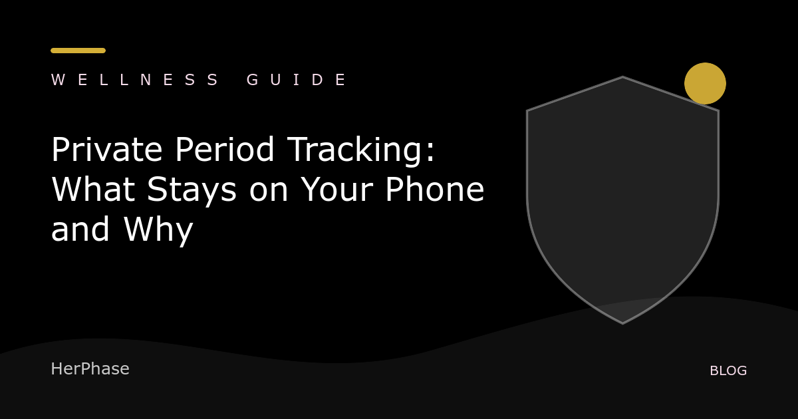

Private period tracker
Private Period Tracking: What Stays on Your Phone and Why
By HerPhase · Updated

Cycle dates, symptoms, moods, and notes can reveal sensitive health context. Before using a period tracker, understand which data stays on the phone and which data reaches a developer or third party.
Ask six direct questions
- Is an account required?
- Are cycle entries uploaded to a developer-operated server?
- Does the app include advertising or third-party analytics SDKs?
- Can I delete all local records?
- Does a device backup or optional sync copy the data elsewhere?
- Does the privacy policy describe the current version in plain language?
“Health app” does not always mean HIPAA
The FTC notes that many consumer health apps are not covered by HIPAA in the same way a doctor or health plan may be. Other consumer-protection and breach-notification rules can still apply. The practical lesson is to read the app’s actual disclosures instead of assuming a familiar medical acronym covers it.
Local-first is specific, not absolute
An app may keep its core records on-device while separately receiving a support email you choose to send. Good privacy copy separates those flows and explains permissions, backups, exports, and deletion.
Sources: FTC consumer privacy guidance and the FTC Mobile Health App Interactive Tool.